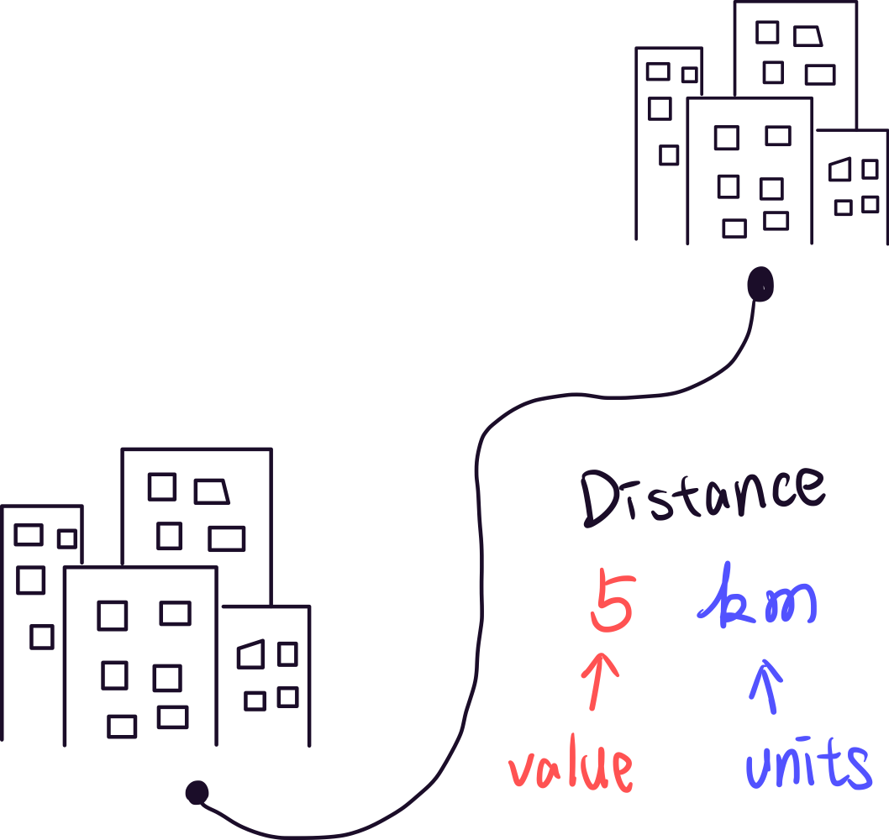

Physical Quantity
What is a physical quantity?
A physical quantity is a physical entity that can be measured or calculated. For example, the mass of an object is a physical quantity that can be measured, and the density of an object is also a physical quantity that can be calculated based on the mass and volume, etc.
In general, a physical quantity can be expressed as a value in some unit. For example, we can say that the distance between two cities is 5 km, where 5 is the value and km is the unit.

Fundamental Quantities & Derived Quantities
In physics, there are two types of quantities: fundamental quantities and derived quantities. The fundamental quantities are the seven base quantities in physics. They are considered fundamental because they are independent of other quantities (meaning they don't depend on other quantities in physics, like time) or are relatively easy to measure (for example, electric current, although it can be related to the charge of an electron and time). All other physical quantities, known as derived quantities, can be expressed as combinations of fundamental quantities.
The seven fundamental quantities are mass, length, time, temperature, amount of substance, electric current, and luminous intensity. And the most common units are ruled by the International System of Units (SI).
| Quantity |
Symbol |
Unit |
| Mass |
M |
kg |
| Length |
l |
m |
| Time |
t |
s |
| Temperature |
T |
K |
| Amount of substance |
n |
mol |
| Electric current |
i |
A |
| Luminous intensity |
I |
cd |
Prefixes of Physical Quantities
Sometimes, we express physical quantities using SI prefixes. For example, km means kilometer, with the prefix symbol k indicating a factor of 10^{3} applied to the meter, since a kilometer is 10^{3} m (or 1000 m).
| Prefix |
Symbol |
Pronunciation |
| 10^9 |
G |
Giga- |
| 10^6 |
M |
Mega- |
| 10^3 |
k |
Kilo- |
| 10^{-3} |
m |
Milli- |
| 10^{-6} |
\mu |
Micro- |
| 10^{-9} |
n |
Nano- |
| 10^{-12} |
p |
Pico- |
Common Physical Quantities and Units in Mechanics
The most common physical quantities and units in mechanics are mass, length, and time. With these quantities, we can easily express how heavy or light an object is, how long it is, and how fast it is moving. We can even calculate how an object will move over a certain period of time, and more.
| Fundamental Quantities |
| Quantity |
Symbol |
Unit |
What role does this quantity play in physics?
|
| Mass |
m |
kg |
Mass is the amount of matter in an object. In physics, if an object have more mass than others, it is heavier and means it's more hard to move or interact by a force. |
| Length |
l |
m |
Length is the distance between two points, the length also being used for identifying the place of an object. |
| Time |
t |
s |
Time is the amount of time that has passed since the beginning of an experiment. In physics, time is an important quantity because it discribe the the situation in certain period of time. |
Derived Quantities |
| Volume |
V |
m3 |
Volume is the amount of space that an object occupies. In physics, volume is used to describe the size of an object in three dimensions.
|
| density |
\rho |
kg/m3 |
Density is the mass per unit volume of an object. In physics, density is used to describe how dense an object is. Sometimes, the density might replace the role of mass in the formula, for example, if we care about the property of an certain part of an object or the property of the certain texture ,instead of the property of a single object.
|
Sample Problem #1
Assume that we have a string ball with radius R ,and the string diameter is d . Evaluate the Length of the string L being used to hold the ball (show that L associated with d and R ).
If the actual length of the string is l \lt L, what is the density \rho of the ball ? (Assume the linear density of the string is \lambda .)
Solutions
Sample Problem #1
Assume that we have a string ball with radius R ,and the string diameter is d . Evaluate the Length of the string L being used to hold the ball (show that L associated with d and R ).
the volume of the ball is
V = \frac{4}{3} \pi R^3
the volume of the ball also equals to the volume of the string (assume no void space)
V = \pi d^2 L
\Rightarrow \frac{4}{3} \pi R^3 = V = \pi d^2 L \Rightarrow L = \frac{4 R^3}{3 d^2}
If the actual length of the string is l \lt L, what is the density \rho of the ball ? (Assume the linear density of the string is \lambda .)
the mass of the string is
m = \lambda l
the density of the string is
\rho = \frac{m}{V} = \frac{\lambda l}{V} = \frac{3 \lambda l}{4 \pi R^3}
Exercise #1 [halliday 1.25]
1.9 \times 10^{5}kg
Exercise #2 [halliday 1.27]
(a)
1.18\times 10^{-29}\ \rm{m^3}
(b)
2.82\times 10^{-10}\ \rm{m}
Exercise #3 [halliday 1.53]
(a)
4.9 \times 10^{-6} \ \rm{pc}
(b)
1.57 \times 10^{-5} \ \rm{ly}